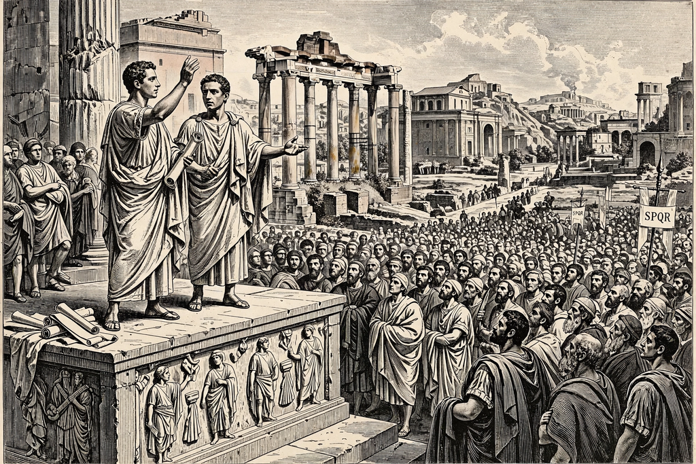

Gracchi

The Gracchi brothers, Tiberius Sempronius Gracchus (c. 163–133 BC) and Gaius Sempronius Gracchus (154–121 BC), were Roman politicians who served as tribunes of the plebs between 133 and 121 BC. They attempted to reform the Roman Republic's social and political structure to help the lower classes, in particular by redistributing public land to the poor. Their reforms and violent deaths are traditionally seen as the opening episode of the century of revolution that ended the Republic.
Background
The brothers were grandsons of Scipio Africanus through their mother Cornelia, famed for calling her sons "my jewels". Rome's conquests had enriched the senatorial elite, who enclosed public land (ager publicus) into large slave-worked estates, displacing the small farmers who formed the backbone of the citizen army.
Tiberius
Elected tribune in 133 BC, Tiberius proposed a law limiting holdings of public land and distributing the surplus in small allotments. When the Senate persuaded another tribune, Octavius, to veto it, Tiberius had him deposed — a shocking breach of custom — and passed the law. Standing for re-election, Tiberius was clubbed to death with some 300 supporters by a mob of senators led by his cousin Scipio Nasica, the first political bloodshed in Rome in centuries.
Gaius
Gaius, tribune in 123 and 122 BC, pursued a broader programme: a subsidised grain law, judicial reforms transferring juries to the equestrians, new colonies, and roads. His proposal to extend citizenship to Rome's Italian allies alienated his support, and in 121 BC the Senate passed the first senatus consultum ultimum against him. Gaius ordered his slave to kill him on the Aventine Hill; some 3,000 of his followers were executed.
Legacy
The Gracchi inaugurated the struggle between the populares and optimates and demonstrated that political violence could decide Roman politics — a lesson taken up by Marius, Sulla and ultimately Caesar. Later ages, from the French Revolution onward, celebrated them as martyrs of social reform.
See also: Roman Republic, Agrarian law, Scipio Africanus.